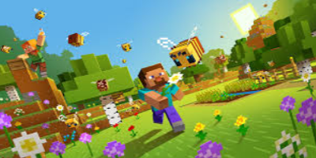

Historia Minecrafta
Minecraft to komputerowa gra survivalowa o otwartym świecie stworzona przez Markusa Perssona i rozwijana przez studio Mojang AB. Minecraft pozwala graczom na budowanie i niszczenie obiektów położonych w losowo generowanym świecie gry. Gracz może atakować napotkane istoty, zbierać surowce czy wytwarzać przedmioty. Pierwsza publiczna testowa wersja gry została wydana 17 maja 2009 roku. Gra została wydana 18 listopada 2011 roku na komputery osobiste. Następnie wydano wersje na konsole i telefony. Jeszcze przed oficjalną premierą gra zdobyła dużą popularność i liczne nagrody. Co roku odbywa się konwent MineCon, na którym fani gry mogą się spotkać i wspólnie zagrać. Sukces gry spowodował, że zaczęto sprzedawać związane z nią przedmioty np. książki, zabawki, tematyczne klocki Lego. W latach 2015–2016 studio Telltale Games wydało spin-off zatytułowany Minecraft: Story Mode, składający się z kilku odcinków.